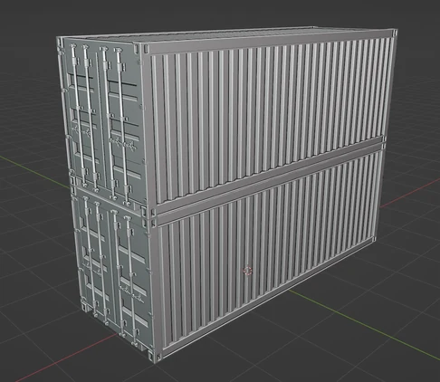
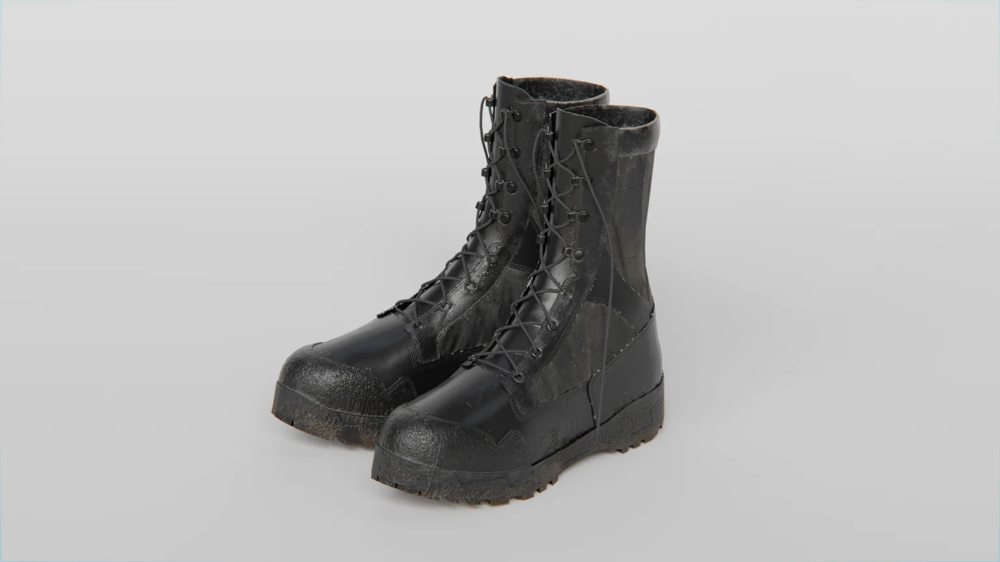
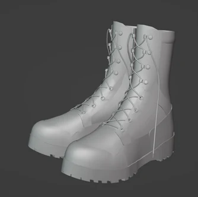

Prop studies / 형태와 표면
컨테이너, 부츠와 모자 등 일상적인 물체를 통해 형태와 재질 표현을 연습한 작업 모음.

01 / Container
반복 구조와 표면의 흔적

02 / Boot
부츠의 실루엣과 재질


03 / Cap
곡면과 봉제선

CREDITS & SCOPE
기여 범위와 작업 기록
개인 연습작으로 제작한 프롭의 모델링과 재질 표현을 소개합니다.
기록 기준: 2026.10 포트폴리오, 17쪽.